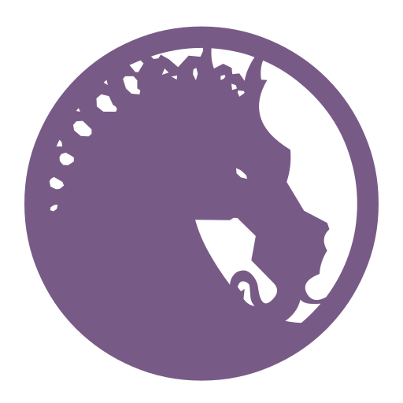
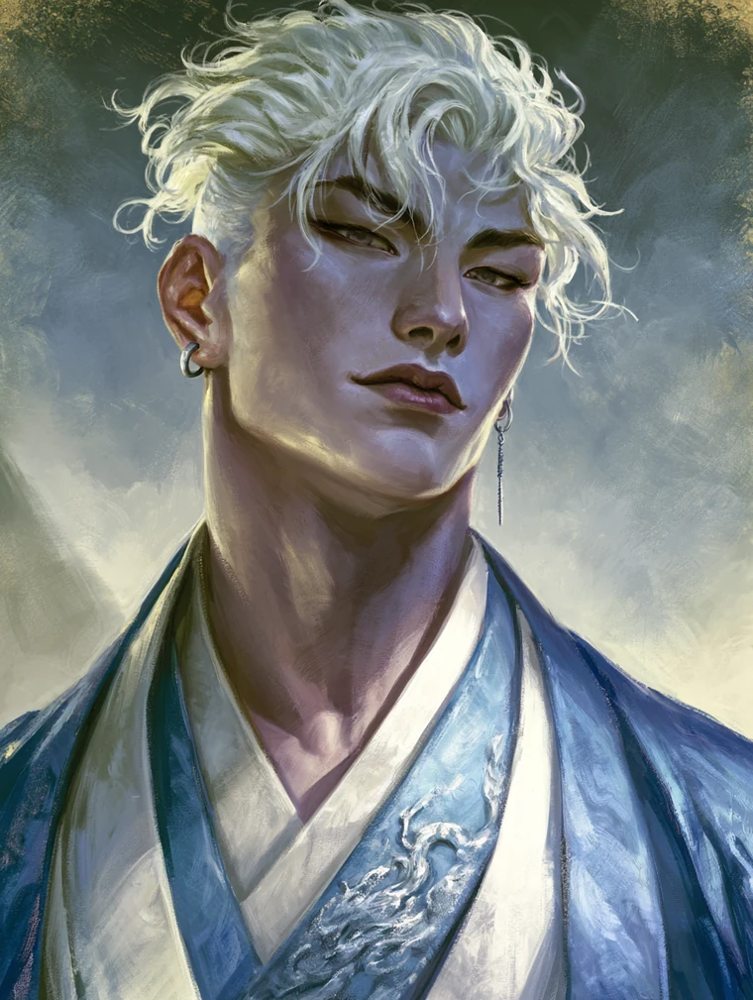
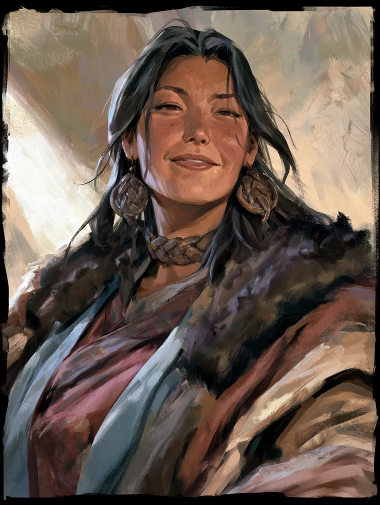
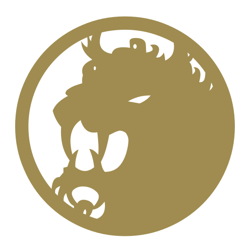
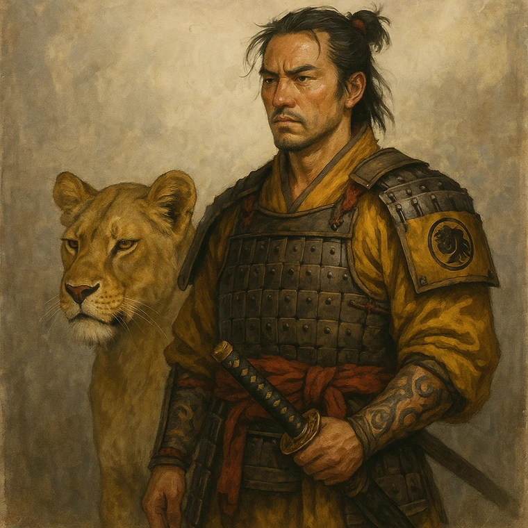

Home›The Character
A courtier of the Crane, the people closest to her, and the ancestor whose battle she has testified to. Read a dossier, or open the sheet and play.






Matsu Beastmaster · Bushi · Rank 2
Setsuna's ancestor, and the Snow Plain sessions are played as him. A beastmaster who fights beside a lion and who called the Unicorn commander a cowardly dog in front of the man's own troops; his surviving records are about weather and supply, and almost never about the fighting.